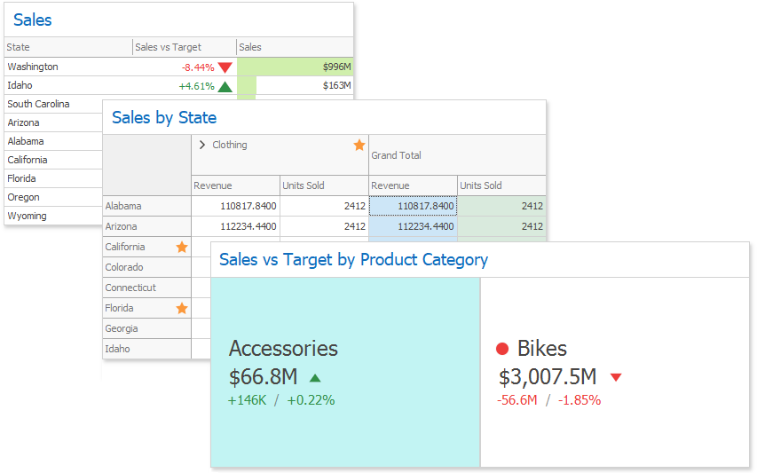
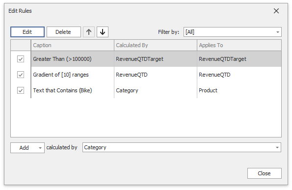

Conditional Formatting
The Dashboard Designer control supports conditional formatting. You can apply a custom style to data elements that satisfy a certain condition for Grid, Pivot, Chart, Scatter Chart and Card items.

Format Rules
Comparison rules used in conditional formatting can be categorized as follows:
- Value - Compares static values (Greater Than, Less Than, Between, etc.).
- Top-Bottom - Highlights a specific number of top/bottom values (Top N, Bottom N).
- Average - Highlights values above or below the average value.
- A Date Occurring - Highlights date-time values that are within a specified interval.
- Expression - Uses complex conditions to apply formatting. You can also pass dashboard parameters to expressions.
- Icon Ranges - Display a specific icon based on a value range. You can select a predefined set of icons or apply a specific icon to each range.
- Color Ranges - Apply specific colors to different value ranges. You can select a predefined set of colors or use custom appearance settings to highlight values within specified ranges.
- Gradient Ranges - Apply formatting using gradient color scales.
- Bar - Visualizes numeric values as bars. You can also color bars corresponding to positive and negative values using different colors.
- Bar Color Ranges - Visualize numeric values as bars. Values within a range display a specific color.
- Bar Gradient Ranges - Visualize numeric values as bars. Values within a range display a specific bar gradient.
Format conditions that can be applied to different data item types are as follows:
- numeric
- string
- Value (with a condition type set to Equal To, Not Equal To or Text that Contains)
- Expression
- date-time
- Value
- A Date Occurring (for dimensions with a continuous date-time group interval)
- Expression
- Icon Ranges
- Color Ranges
- Gradient Ranges
- Bar
- Bar Color Ranges
- Bar Gradient Ranges
Create and Edit a Format Rule
You can create format rules in the following ways:
Click the Edit Rules button on the Home ribbon tab.

This action invokes the Edit Rules dialog where you can create a new format rule or manage rules applied to the dashboard item.
Click the measure/dimension menu button in the Data Item's pane and select Add Format Rule/Edit Rules.

The Add Format Rule option invokes the pop-up menu where you can select the format rule and format condition's type for a new rule.
When you click Edit Rules, the Edit Rules dialog appears. You can edit all created format rules for the selected data item in the dialog.
The Clear Rules button clears the rules for the specified data item.
The Edit Rules Dialog
The Edit Rules dialog contains format rules applied to the dashboard item:

You can manage format rules in the dialog in the following ways:
| Action | Description |
|---|---|
| Edit the selected rule | Use the Edit button or double-click the rule. |
| Delete the selected rule | Use the Delete button. |
| Reorder format rules | Use the Up and Down buttons ( and and  icons). You can reorder rules to specify their priority. Rules are applied from top to bottom. The bottom rule has the highest priority. icons). You can reorder rules to specify their priority. Rules are applied from top to bottom. The bottom rule has the highest priority. |
| Enable/disable a rule | Use the corresponding check box in the left column. |
| Create a new rule | Click the Add button and select the format condition. The calculated by combo box allows you to select the measure/dimension that is used to calculate the format rule. For Card, when you create a rule for delta, specify the delta type whose values are used to calculate a condition in the using combo box. |
| Filter format rules by the specified data item | Use the Filter by combo box. |
The Add button invokes a pop-up menu where you can specify appearance settings and set the condition's value for the format rule. Available settings depend on the selected format rule.

The image below displays the Greater Than dialog, which corresponds to the Value format condition for a Grid dashboard item. The format condition applies to the ExtendedPrice data item in the Apply to drop-down list.

Dashboard Items Specific
Refer to the following topics for more information about specific format rule settings: